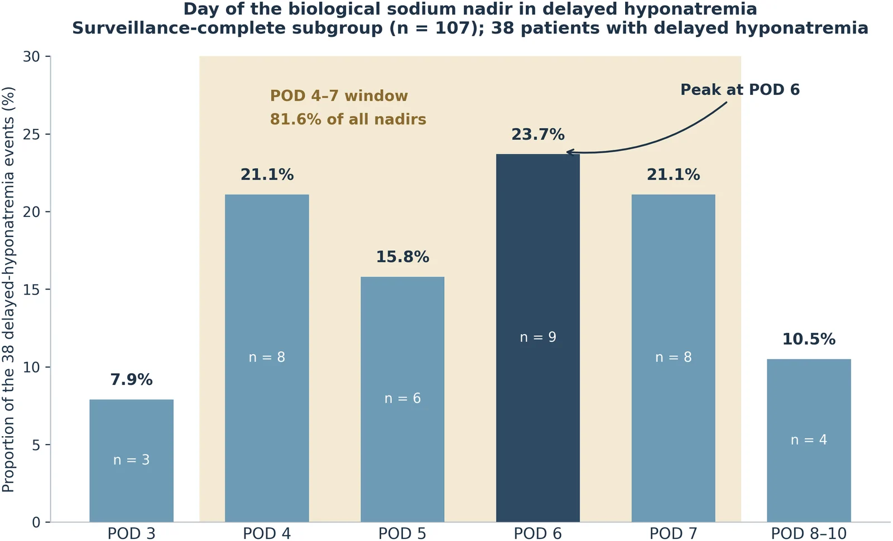
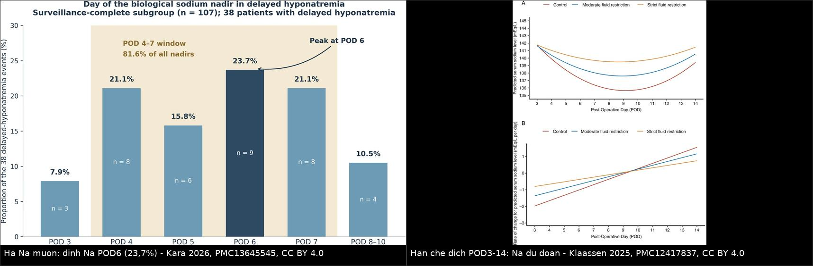
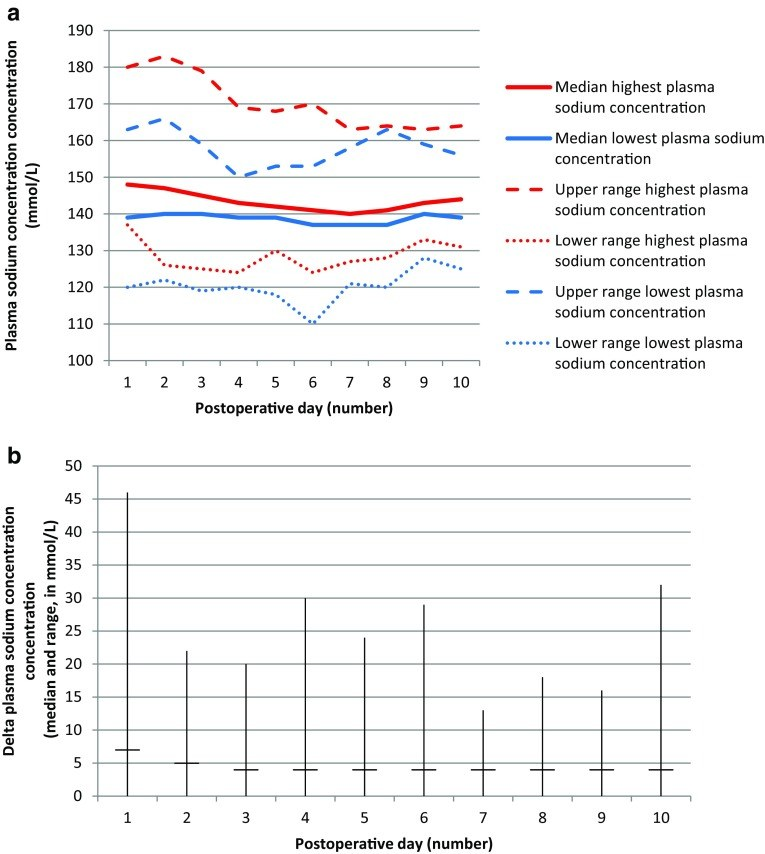
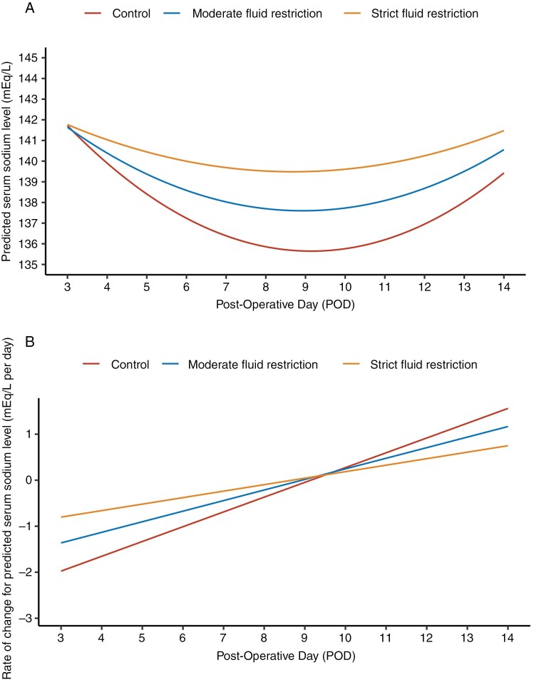

1757 — Hạ natri máu MUỘN sau xuất viện ở trẻ mổ vùng trên yên / Delayed post-discharge hyponatremia after pediatric suprasellar surgery
Tags: pattern:ha-natri-mau pattern:siadh pattern:da-nieu vung:tuyen-yen vung:nao protocol:dien-giai-na protocol:theo-doi-ngoai-tru score:feurate incidentaloma:khong
Mức chắc chắn (certainty): tổng hợp y văn (literature synthesis) — 1 đoàn hệ người lớn phân tích ảnh hưởng của cường độ theo dõi lên tỉ lệ phát hiện hạ Na muộn (Front Endocrinol 2026, PMC13645545, CC BY 4.0), 1 RCT hạn chế dịch sau mổ (Neuro-Oncology 2025, PMC12417837, CC BY 4.0), 2 đoàn hệ nhi khoa về dao động Na sau mổ u vùng trên yên (Pituitary 2018, PMC6018586; Pituitary 2026, PMC13033463 — CC BY 4.0), và số liệu đường cong Na trong 14 ngày của 202 trẻ đã tổng hợp ở bài 1755 (PMC10909694). Không có ca nguyên văn do nhóm tự viết; ca trong quiz là ca có ảnh từ bài gốc, ghi rõ PMCID.
Câu chốt: hạ Na muộn không phải biến cố của ngày đầu mà của ngày 4–10, đỉnh ngày 6 — đúng lúc bệnh nhi đã ra viện (trung vị nằm viện chỉ 4 ngày). Ba con số phải thuộc: 81,6% các đáy Na rơi vào POD 4–7; ở người lớn, ai không được đo Na POD 5–7 có nguy cơ được ghi nhận hạ Na muộn thấp hơn 11,4 lần (tỉ lệ "quan sát được" nhảy 16,4% → 35,5% → 57,5% chỉ tùy lịch đo); và cân nặng không tăng, không đa niệu chính là SIADH — hạn chế dịch, không truyền muối.
1. Tổng quan bệnh học – cơ chế hình ảnh
1.1 Vì sao Na tụt vào ngày 5–7 mà không phải ngày 1
- Ngày 1–2 — ĐTĐ nhạt: phẫu tích u vùng trên yên cắt ngang sợi trục từ nhân trên thị/nhân cạnh não thất xuống thùy sau yên → mất phóng thích ADH → đa niệu, Na tăng (PMC10909694).
- Ngày 4–10 — SIADH: các sợi trục bị cắt thoái hóa kiểu Waller, túi chứa ADH vỡ ra và phóng thích ADH không điều hòa vào tuần hoàn → tái hấp thu nước tự do ở ống góp (qua AQP2) → pha loãng Na. ADH tiết ra theo kiểu "xả hàng loạt", không theo áp lực thẩm thấu → đây là lý do hạn chế dịch hiệu quả còn truyền NaCl 0,9% thì muối vào rồi ra theo nước tiểu (PMC10909694, PMC12417837).
- Vì sao đỉnh lại ở đúng ngày 6: thời gian thoái hóa sợi trục + giải phóng túi ADH mất 4–7 ngày, trùng với thời gian não thải osmolyte nội bào (24–48 giờ) để thích nghi — nên Na tụt nhanh trong 24–48 giờ quanh đáy. Trong đoàn hệ người lớn có theo dõi đầy đủ, đáy Na tập trung ở POD 6 (23,7%) và POD 4–7 chiếm 81,6% toàn bộ đáy; POD 8–10 chỉ còn 10,5% (PMC13645545).
- Ngày 12–14 — ĐTĐ nhạt vĩnh viễn: ADH không hồi phục → Na tăng lại. Vì vậy đường cong Na có hai đỉnh và một đáy, và đáy nằm sau cửa sổ nội trú thông thường (PMC10909694).
1.2 Vì sao "tỉ lệ hạ Na muộn" trong y văn dao động 5–30% — đó là thiên lệch phát hiện, không phải sinh học
- Cùng một phẫu thuật viên, cùng một định nghĩa (Na < 135 mmol/L ở POD 3–10), tỉ lệ "quan sát được" là: 16,4% ở cả đoàn hệ (n = 281) → 35,5% ở nhóm có theo dõi đầy đủ (có ít nhất 1 lần đo trong POD 5–7, n = 107) → 57,5% ở nhóm có đo đúng ngày 7 (PMC13645545).
- Ai không được đo POD 5–7 có odds được ghi nhận hạ Na muộn thấp hơn 11,4 lần (p < 0,001). Phân tích chuẩn hóa trực tiếp cho thấy ~83% "xu hướng tăng qua hai thập kỷ" chỉ là do tăng cường độ đo, không phải bệnh nặng lên (PMC13645545).
- Lý do cơ học: trung vị nằm viện 4 ngày; 99% bệnh nhân không có xét nghiệm POD 5–7 là vì đã ra viện trước POD 5. Đáy sinh học mở POD 4 — tức là bệnh nhi ra viện đúng lúc cửa sổ nguy cơ bắt đầu (PMC13645545).
- Hệ quả lâm sàng: hạ Na muộn là nguyên nhân hàng đầu gây tái nhập viện không dự kiến sau mổ tuyến yên qua xoang bướm; ở trẻ, hạ Na muộn (SIADH) và ĐTĐ nhạt là hai nguyên nhân hàng đầu của tái nhập viện trong 30 ngày (PMC6018586 trích lại, PMC13645545).
1.3 Vì sao trẻ khác người lớn — số liệu nhi khoa
| Đại lượng | Con số | Nguồn |
|---|---|---|
| Tỉ lệ hạ Na sau mổ u sọ hầu ở trẻ (14 ngày) | 72,8%; nặng < 130 ở 40,6% | PMC10909694 (bài 1755) |
| Đường cong Na ở trẻ | đỉnh 143,6 ± 7,6 (ngày 2) → đáy 135,5 ± 7,5 (ngày 6) → đỉnh 143,2 ± 6,7 (ngày 14) | PMC10909694 |
| Đỉnh tần suất hạ Na | ngày 7: 42,9%; khởi phát trung vị ngày 4 (2–6) | PMC10909694 |
| ĐTĐ nhạt sau mổ (7 trung tâm, Hà Lan) | 67,5% (81/120 trẻ) | PMC6018586 |
| Dao động Na ≥ 10 mmol/L/24 giờ khi có ĐTĐ nhạt | 75,3%; biên độ tối đa 46 mmol/L/24 giờ | PMC6018586 |
| Biến chứng thần kinh khi có ĐTĐ nhạt | rối loạn tri giác 23,5% vs 5,1% (p = 0,009); co giật liên quan hạ Na | PMC6018586 |
| Sau tập trung hóa điều trị (2018–2023, 73 trẻ) | ĐTĐ nhạt 69,7%; dao động ≥ 10 mmol/L/24 giờ 49,1%; biên độ tối đa 30 → 14 mmol/L/24 giờ (2023) | PMC13033463 |
| Yếu tố nguy cơ hạ Na nặng ở trẻ (đa biến) | mở sọ OR 5,52; không thiếu hụt hormone trước mổ OR 2,031; u nguyên phát OR 2,095 (xu hướng) | PMC10909694 |
| Yếu tố nguy cơ ở người lớn | hạ Na sớm ngày 0–2: 46,9% vs 12,4% sẽ có hạ Na muộn (RR 3,77, OR 6,14; đa biến OR 2,83, KTC 0,86–9,33); nữ OR 2,73; tương tác tuổi × giới p = 0,010 (nam nguy cơ tăng theo tuổi) | PMC13645545 |
| Mô hình dự báo | AUC hiệu chỉnh optimism 0,645 — chưa dùng được lâm sàng | PMC13645545 |

Đáy Na ở 38 bệnh nhân hạ Na muộn: POD 6 = 23,7% (n = 9), POD 4–7 = 81,6% toàn bộ đáy, POD 8–10 chỉ 10,5%. Đây là "cửa sổ" phải đo Na ngoại trú. Ảnh nguyên bản (Front Endocrinol 2026, PMC13645545, CC BY 4.0).2. Mẫu hình + chẩn đoán phân biệt theo vị trí (Gamut)
- Hạ Na xuất hiện 4–10 ngày sau mổ, bệnh nhi đã ra viện, không sốt, vết mổ tốt:
- SIADH sau mổ (thể hay gặp nhất) · CSWS (nếu kèm đa niệu, cân nặng giảm) · ĐTĐ nhạt đang dùng desmopressin quá liều · suy thượng thận (cortisol thấp) · suy giáp trung ương · uống nhiều nước do khát (nhất là trẻ lớn, hội chứng dưới đồi) · reset osmostat.
- Hạ Na + đa niệu + cân nặng giảm + Hct tăng:
- CSWS sau ĐTĐ nhạt (thể xen kẽ, bài 1755) · lợi niệu do mannitol/thuốc · nôn/táo bón kéo dài · suy thượng thận cấp.
- Hạ Na + co giật/li bì ngay tại nhà (cấp tính < 48 giờ):
- SIADH nặng · ngộ độc nước · hạ Na do desmopressin liều cao — đây là nhóm cần NaCl 3% ngay.
- Theo thời điểm trên trục ngày mổ (đọc như "dấu hiệu hình ảnh"):
- POD 1–2: Na tăng → ĐTĐ nhạt; POD 4–10: Na giảm → SIADH/CSWS; POD 12–14: Na tăng lại → ĐTĐ nhạt vĩnh viễn (PMC10909694).
3. Bảng so sánh phân biệt (ma trận đối chiếu)
| Thực thể (entity) | Hình ảnh/lâm sàng điển hình | Chốt vào (rule-in) | Chốt loại (rule-out) | Gợi ý xác nhận |
|---|---|---|---|---|
| SIADH muộn sau mổ (bài này) | Na tụt POD 4–10, đỉnh ngày 6–7; cân nặng không giảm, niêm mạc ẩm, không khát; nước tiểu cô đặc | Thể tích bình thường + Uosm > 100 mOsm/kg + FEurate về < 11% sau sửa Na + cortisol/FT4 bình thường | Đa niệu > 3 mL/kg/giờ + cân nặng giảm + FEurate > 11% kéo dài → không phải SIADH | Cân nặng 2 lần/ngày; FEurate; thử hạn chế dịch |
| CSWS | Hạ Na kèm đa niệu, khát, cân nặng giảm, Hct/Hb tăng, nhịp nhanh | Thể tích giảm + Na niệu > 40 mmol/L + FEurate > 11% cả sau khi sửa Na | Cân nặng ổn định + FEurate < 11% sau sửa Na | FEurate; siêu âm TM chủ dưới |
| ĐTĐ nhạt + desmopressin quá liều | Na tụt nhanh trong 24 giờ, cân nặng tăng, nước tiểu giảm đột ngột sau khi tăng liều | Ngừng/giảm desmopressin → Na tăng | Na tiếp tục giảm dù đã giảm liều → nghĩ CSWS | Ngừng liều thử + cân nặng |
| Suy thượng thận cấp | Hạ Na + tăng K, hạ HA, mệt, hạ đường huyết; sau mổ vùng trên yên rất dễ gặp | Cortisol sáng thấp + ACTH không tăng (trung ương) | Cortisol bình thường | Cortisol/ACTH; thử hydrocortisone |
| Suy giáp trung ương | Hạ Na nhẹ, chậm chạp, táo bón; FT4 thấp, TSH không tăng | FT4 thấp + TSH thấp/không tăng | FT4 bình thường | FT4/TSH |
| Uống nhiều nước do khát (hội chứng dưới đồi) | Trẻ lớn, khát nhiều, Na dao động, nước tiểu rất loãng | Uosm < 100 mOsm/kg + Na tăng khi hạn chế nước | Uosm > 300 → không phải uống nhiều | Nhật ký nước tiểu 24 giờ |
| Reset osmostat | Na ổn định 125–130 nhiều tuần, không triệu chứng, nước tiểu thay đổi được theo lượng nước | Na ổn định + Uosm thay đổi theo nước + FEurate 4–11% | Na tụt nhanh theo ngày | Theo dõi 1–2 tuần, không điều trị |
| Hạ Na giả (pseudohyponatremia) | Không triệu chứng; gặp khi protein/lipid máu cao hoặc mẫu tan máu | Osmolality máu bình thường | Osmolality máu thấp → hạ Na thật | Đo osmolality trực tiếp, lấy lại mẫu |

Trái: 81,6% đáy Na rơi vào POD 4–7 (PMC13645545). Phải: Na dự đoán POD 3–14 theo nhóm uống tự do vs hạn chế dịch vừa vs hạn chế dịch chặt — nhóm chặt giữ Na cao hơn 1,81 mmol/L và 0% hạ Na nặng (PMC12417837). Ảnh ghép letterbox, không crop; cả hai nguồn CC BY 4.0.4. Protocol chụp + hệ phân độ/điểm chuẩn hóa
4.1 Lịch đo Na — phần "chụp" quan trọng nhất ở bài này là thời điểm lấy máu
- Nội trú: Na mỗi 6–12 giờ trong 48 giờ đầu, rồi mỗi 12–24 giờ đến ngày 14 (bài 1755).
- Trước khi ra viện (bắt buộc): nếu chưa qua POD 5 → hẹn đo Na ngoại trú đúng POD 5–7, không dựa vào "lúc ra viện Na bình thường".
- Ngoại trú: đo Na tại POD 5–7 (cửa sổ chính) và lặp ở POD 10–14 nếu: có hạ Na sớm ngày 0–2, u sọ hầu/mở sọ, ĐTĐ nhạt, hoặc bất kỳ triệu chứng nào. Đo lại 48 giờ sau mỗi lần đổi liều desmopressin.
- Cùng một phòng xét nghiệm, cùng phương pháp (điện cực chọn lọc ion) để tránh "nhảy" giả; mẫu không bị tan máu (tan máu làm Na giả tăng, nhưng mẫu để lâu có thể sai cả hai chiều).
- Dấu hiệu gọi ngay: nôn, đau đầu, li bì, co giật, tăng cân nhanh (nước dư) — không chờ đến lịch hẹn.
4.2 Ngưỡng xử trí
- Na < 135 = hạ Na; < 130 = nặng (đoàn hệ trẻ dùng ngưỡng này); < 125 hoặc có triệu chứng thần kinh = cấp cứu.
- Sửa Na an toàn: ≤ 8–10 mmol/L/24 giờ, ≤ 18 mmol/L/48 giờ; trẻ dùng 6–8 mmol/L/ngày; nếu có co giật thì nâng 4–6 mmol/L trước bằng NaCl 3% 3–5 mL/kg (bài 1755).
- Hạn chế dịch (chỉ khi KHÔNG có ĐTĐ nhạt): bắt đầu POD 3 sau khi đã loại trừ ĐTĐ nhạt; 1,8–2 L/ngày (người lớn) hoặc 1–1,2 L/ngày nhóm chặt; kết quả RCT: hạ Na chung 31,9% → 28,2% → 21,0%, hạ Na nặng 7,4% → 5,1% → 0%, tái nhập viện 6,4% → 1,6% (PMC12417837).
- Chống chỉ định tuyệt đối của hạn chế dịch: đang ĐTĐ nhạt/Na tăng — hạn chế dịch lúc này gây tăng Na nặng; đây là lý do RCT loại trừ bệnh nhân còn ĐTĐ nhạt ở POD 3.
4.3 Thuật toán ngoại trú
flowchart TD
A[Tre ra vien sau mo<br/>u vung tren yen] --> B{Da qua POD 5<br/>truoc khi ra vien?}
B -->|Chua| C[Hen do Na dung POD 5-7<br/>va lap lai POD 10-14]
B -->|Roi| D[Do Na POD 5-7<br/>tai phong kham]
C --> E{Na duoi 135?}
D --> E
E -->|Khong| F[Hen lai POD 10-14<br/>va kham trieu chung]
E -->|Co| G[Can nang - Hct - nuoc tieu<br/>phân biet SIADH va CSWS]
G --> H{The tich giam?<br/>can nang giam - Hct tang - da nieu}
H -->|Co| I[CSWS: bu NaCl 0-9 phan tram<br/>fludrocortisone neu can]
H -->|Khong| J[SIADH: han che dich<br/>NaCl 3 phan tram neu Na duoi 125<br/>hoac co trieu chung]
I --> K[Na duoi 130 hoac co trieu chung<br/>hoac giam tren 10 mmol/L/24 gio<br/>nhap vien lai]
J --> K
K --> L[Kiem tra lai sau 4-6 gio<br/>muc tieu 6-8 mmol/L/24 gio]
5. Biến thể bình thường và cạm bẫy
- "Na lúc ra viện bình thường nghĩa là an toàn" — sai: đáy ở POD 6, trung vị nằm viện 4 ngày; 99% ca không có xét nghiệm POD 5–7 là vì đã ra viện trước đó (PMC13645545).
- "Tỉ lệ thấp nghĩa là bệnh nhẹ" — tỉ lệ 5–30% trong y văn chủ yếu phản ánh lịch đo, không phản ánh sinh học; cùng một nhóm mổ, "tỉ lệ" nhảy 16,4% → 57,5% chỉ do thêm một lần đo ngày 7 (PMC13645545).
- "Hạn chế dịch là vô hại" — nguy hiểm nếu bệnh nhi còn ĐTĐ nhạt: hạn chế dịch đẩy Na lên, có thể gây tăng Na nặng; phải xác nhận không đa niệu, cân nặng không giảm trước khi hạn chế (PMC12417837).
- Bẫy "uống nhiều vì khát" ở trẻ có hội chứng dưới đồi (bài 1754): hạ Na do uống nhiều chứ không phải SIADH — hạn chế dịch vẫn đúng nhưng nguyên nhân và lời khuyên khác, và mất khát đi kèm thì ngược lại (nguy cơ tăng Na).
- Bẫy "Na niệu cao = CSWS" — Na niệu > 30 mmol/L ở cả hai; 10/24 ca mất muối thận có Na niệu < 20 (bài 1755).
- Bẫy desmopressin — đa niệu tái xuất hiện bị hiểu là "thiếu desmopressin" và tăng liều, trong khi Na đang tụt vì CSWS (bài 1755).
- Bẫy mô hình dự báo — AUC 0,645 nghĩa là không thể dùng tuổi/giới/Na sớm để quyết định "khỏi cần đo"; hiện chưa có công cụ nào thay được việc đo Na POD 5–7 (PMC13645545).
6. Tự lượng giá — Blind Quiz ngay trên trang tĩnh
Ca 1 — Trẻ 9 tuổi, u sọ hầu, ra viện POD 4 với Na 139. Đêm POD 6 nôn và li bì.
- Gợi ý lâm sàng: không đa niệu từ POD 3, cân nặng tăng 0,8 kg trong 2 ngày, niêm mạc ẩm.
- Câu hỏi: (1) Vì sao Na tụt đúng lúc này? (2) SIADH hay CSWS? (3) Bước tiếp theo trong 30 phút và trong 24 giờ?
Bấm để hiện đáp án (findings + chẩn đoán)
- Đáy Na muộn tập trung POD 4–7 (81,6%), đỉnh POD 6 (23,7%) — bệnh nhi ra viện POD 4 là ra viện trước khi cửa sổ mở.
- SIADH: cân nặng tăng, không đa niệu, niêm mạc ẩm; xác nhận bằng Uosm > 100 mOsm/kg và FEurate < 11% sau sửa Na.
- Cấp cứu: nếu co giật → NaCl 3% 3–5 mL/kg trong 10–15 phút; sau đó hạn chế dịch 50–70% nhu cầu, mục tiêu 6–8 mmol/L/24 giờ; không truyền NaCl 0,9% đơn thuần.
- Nguồn ảnh: Frontiers in Endocrinology 2026, Fig. 2 — PMC13645545, CC BY 4.0 (nguyên bản).
Ca 2 — Trẻ 6 tuổi sau mổ u sọ hầu: Na theo ngày và biên độ dao động.

- Gợi ý lâm sàng: 120 trẻ, 7 trung tâm; ĐTĐ nhạt 67,5%.
- Câu hỏi: (1) Đọc đỉnh và đáy của "median lowest Na". (2) Biên độ dao động lớn nhất là bao nhiêu và ở ngày nào? (3) Vì sao trẻ có ĐTĐ nhạt vĩnh viễn dao động mạnh hơn?
Bấm để hiện đáp án (findings + chẩn đoán)
- Đường thấp nhất có đáy quanh ngày 6 (~136–138 mmol/L), đường cao nhất giảm dần từ ~180 xuống ~165 → dao động hai chiều trong cùng một ngày.
- Biên độ tối đa 46 mmol/L/24 giờ, lớn nhất ở ngày 1 (chênh giữa đường cao nhất và thấp nhất), sau đó thu hẹp dần đến ngày 10.
- Trẻ ĐTĐ nhạt vĩnh viễn có tần suất và mức độ dao động cao hơn trẻ ĐTĐ nhạt thoáng qua/không ĐTĐ nhạt (p = 0,007); rối loạn tri giác 23,5% vs 5,1% (p = 0,009).
- Ý nghĩa: một lần đo Na không đại diện cho cả ngày — phải đọc xu hướng và đo lặp.
- Nguồn ảnh: Pituitary 2018, Fig. 1 — PMC6018586, CC BY 4.0 (nguyên bản).
Ca 3 — Quyết định "có nên hạn chế dịch cho mọi trẻ ra viện" hay không.

- Gợi ý lâm sàng: RCT 300 bệnh nhân dự kiến, 3 nhóm: uống tự do (n = 94), hạn chế vừa 1,8–2 L/ngày (n = 39), hạn chế chặt 1–1,2 L/ngày (n = 62), từ POD 3–14.
- Câu hỏi: (1) Nhóm nào có đáy Na thấp nhất? (2) Lợi ích định lượng của nhóm chặt? (3) Ai không được vào phác đồ này?
Bấm để hiện đáp án (findings + chẩn đoán)
- Nhóm uống tự do có đáy thấp nhất (
135,7), nhóm chặt giữ đáy cao nhất (139,6); hiệu số +1,81 mmol/L (KTC 0,34–3,27; p = 0,02). - Hạ Na chung 31,9% / 28,2% / 21,0%; hạ Na nặng (Na < 125) 7,4% / 5,1% / 0%; tái nhập viện 6,4% → 1,6%.
- Không áp dụng cho bệnh nhân còn ĐTĐ nhạt ở POD 3, suy thận mạn, suy tim, hạ Na mạn, suy thượng thận/suy giáp chưa điều trị (đều là tiêu chuẩn loại trừ của RCT).
- Nguồn ảnh: Neuro-Oncology 2025, Fig. 2 — PMC12417837, CC BY 4.0 (nguyên bản).
Bài liên quan chéo
- 600 – Tổng quan Hệ Nhi khoa
- 1755 – Hạ Na sau mổ u vùng trên yên: SIADH vs CSWS (cơ chế + FEurate + xử trí nội trú)
- 1754 – Hội chứng dưới đồi ở trẻ (mất khát → nguy cơ tăng Na; uống nhiều → hạ Na)
- 1756 – Hội chứng gian não ở nhũ nhi (u đường thị/dưới đồi)
- 1710 – ĐTĐ nhạt trung ương sau mổ tuyến yên
- 1644 – ĐTĐ nhạt trung ương ở trẻ
- 092 – Suy thượng thận & suy tuyến yên quanh mổ
Ảnh
1757_delayed-hyponatremia-nadir_PMC13645545-F2.jpg— ngày của đáy Na (POD 6 = 23,7%; POD 4–7 = 81,6%).1757_pediatric-sodium_PMC6018586-F1.jpg— Na cao nhất/thấp nhất theo ngày ở 81 trẻ có ĐTĐ nhạt + biên độ dao động.1757_fluid-restriction_PMC12417837-F2.jpg— Na dự đoán POD 3–14 theo nhóm hạn chế dịch.composite_dinh-na-pod6_va_han-che-dich.jpg— ảnh ghép 2 ô, cả hai nguồn CC BY 4.0.- Nguồn + giấy phép từng ảnh: xem
images/CREDITS.mdvàsources.md.
Không dùng để chẩn đoán độc lập khi chưa có người hướng dẫn.